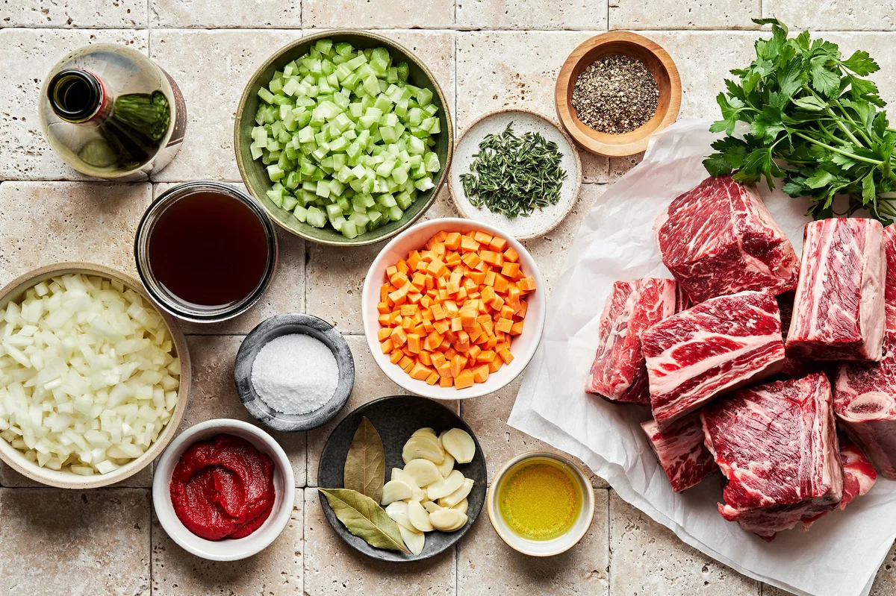

Wine Braised Short Ribs
Wine Braised Short Ribs
We’ve got you covered with this comforting and hearty short rib recipe so tender you won’t be able to stop yourself from devouring them all in one sitting.

The Easiest, Fall-Off-The-Bone, Best Short Ribs Recipe
If you’ve never had short ribs before, you’re in for a treat! Wine braised short ribs will change your life – and we mean it! Flavorful, soft, fall-off-the-bone meat marinated in a wine sauce, overtop of creamy mashed potatoes will be one of your favorite, cozy meals. In our recipes for beef short ribs, we use a slow cooking method, which allows the short ribs to become rich and tender. And although the short rib recipe may seem intimidating, the oven does most of the work so you can sit back, relax, and in three hours' time, your entire house will smell like you’ve been in the kitchen all day. While you can make this dish anytime (and you will probably want to!), we think it’s the perfect meal for a special celebration. When shopping for your beef short ribs, ask your local butcher for the meatiest thickest ones!
Ingredients

- 5 pounds bone-in, beef short ribs
- 1 tablespoon kosher salt, plus more for serving
- 2 teaspoons freshly cracked black pepper, plus more for serving
- 2 tablespoons vegetable oil
- 1 medium onion, finely chopped
- 3 celery ribs, finely chopped
- 2 medium carrots, peeled, finely chopped
- 4 garlic cloves, thinly sliced
- 2 tablespoons tomato paste
- 2 cups red wine
- 2 bay leaves
- 2 sprigs fresh thyme
- 2 cups beef stock
- Finely chopped flat-leaf parsley, for serving
- mashed potatoes, egg noodles or polenta, for serving
Directions
- Preheat the oven to 350°F with a rack in the center position.
- Season the short ribs with salt and pepper.
- Heat the oil in a large dutch oven over medium-high heat. Once the oil just begins to smoke, working in batches, add the short ribs and cook until browned, 2-3 minutes per side. Transfer the ribs to a plate. Remove all but 2 tablespoons of the fat from the pot.
- Reduce the heat to medium. Add the onion, celery and carrots, cook, stirring constantly, until softened, about 5 minutes. Add the garlic and cook, stirring, until fragrant, about 1 more minute. Add the tomato paste, stirring to combine. Pour in the wine and stir to incorporate. Bring to a simmer over medium heat and allow the liquid to reduce by ⅓, about 15 minutes.
- Return the ribs to the pan along with any collected juices. Add the bay leaves, thyme and beef stock. Increase the heat to high and bring to a boil, cover the pot and transfer it to the oven. Cook until the ribs are tender and falling off the bone, about 2 hours.
- Discard the bay leaves and thyme stems. Using tongs, transfer the meat to a serving platter and tent with a foil to keep warm.
- Return the pan to medium-high heat and bring the liquid to a boil. Cook until reduced by about ⅓, 8-10 minutes. Pour the sauce over the meat, season with additional salt and pepper to taste and garnish with parsley. Serve short ribs family-style with mashed potatoes, egg noodles or polenta.
- Enjoy!